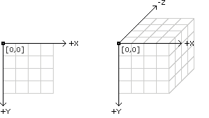
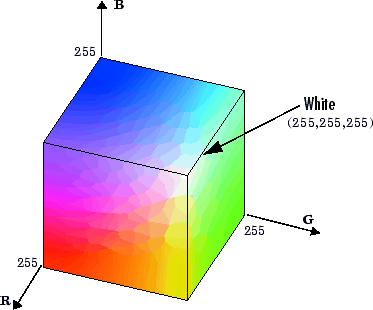

원인호 wonderino쥐메일
println ("Hello World");;"좌" + "우"point/line/rect/ellipse/triangle/arc/quad/curve...
point(10, 10); //점(x,y)line(10, 10, 50, 50); // 직선(시작x, 시작y, 끝x, 끝y)rect(20, 20, 50, 50); //네모(좌측상단x, 좌측상단y, 넓이, 높이)ellipse(20,20,100,100); //타원(중심x, 중심y, 넓이, 높이)위치 : cartesian coordinate

색상 : fill, stroke
0~255(검정->흰) : 256단계 // 8비트

내 마음대로 그리기:
배경: size/background
size(400, 300); //캔버스의 크기background(255); //캔버스의 배경색주석
// 왜 안 돌아가지?
/* 난 누군가.
또 여긴 어딘가. */
움직여라
setup/draw
void setup() { size(400,300);} //실행하면 한번만 실행될 코드void draw() { println(millis()); rect(100,100, 200, 100);} //실행하면 계속해서 실행될 코드frameRate/frameCount (프레임레이트 란?)
frameRate(60); // 초당 draw함수를 몇번 실행시킬까.println(frameCount) //지금 몇 프레임 지났냐더 움직여보자
key(Pressed/Released/Typed)
void keyPressed(){println(key);}mouse(Pressed/Clicked/Moved/Released/Dragged)
void mousePressed(){background(random(0,255));}임의의 수 : random
변수란? 그럼 안변수는?
변수와 상수 : 바꿀수 있거나 없거나
선언과 초기화
int number;
number = 10;
int next_number = 10;
대소문자 구분/예약어 주의/문자로 시작/특수문자는 -,$ 만
- boolean : true/false
- char : 'a'
- bype : -128~127
- short : -32768 ~ 32767
- int : -2147483648 ~ 2147483647
- float : 1.4E-45 ~ 3.4028235E38
`float pi = 3.14;`
- long/duble
모르겠으면 '정수는 int' '실수는 float'이구나 정도...
float f = 100.0;
int i = 10 + (int)f;
float a = 10.0 + i;
** 작은 형에서 큰 형으로 변환은 생략해도 좋다.
String deostroy = "파." + "괘." + "한." + "다.";
- Global 전역변수 : 아무곳에서나 접근 가능하다.
- Local 지역변수 : {}안에서만 기억된다.
대입연산자 : = *= /= %= += -= ........
우선순위가 있다. 모르면 괄호쳐라.
단항과 대입은 왼쪽으로 진행
int a = 10;
color c = color(255,125,45);
a += 10;
a++;
나머지 연산자(%)를 잘 사용하자.
background(frameCount%255);
if(조건식) {뭐라도 좀 해보지;}
else if(다음 조건식) {그렇다면 이거라도;}
else {모르겠다;}
while : 조건문이 true이면 계속하거라;
while(조건문) {...;}
int a = 10;
while(a>0) {point(a* width/11, height/2); a--}
for : 초기화-> 조건식 -> 뭔가 한다 -> 증감식
for(초기화;조건식;증감식){...;}
for (int i=10; i > 0; i--) {point(i* width/11, height/2);}
탈출!!! break와 continue
이중루프
for(int i=0 ; i < 10 ; i++){
for(int j=0; j < 10 ; j++){
println("i: "+ i + " j: "+ j);
}
}
`int[] score = new int[5];`
`int[] score = {10,20,30,40};`
반복문을 활용하자.
for(int i=0; i < score.length; i++) {println(score[i]);}
new가 뭐지????
내 마음속의 표그리기 : 다차원 배열 [행][열] = [가로][세로]
int[][] score = new int[5][3]; // 5*3 행렬
po이중루프!!wer를 활용한다면!!!!
`int add(int a, int b) { return a+b }'
내놓을것이 없다면 void
void myRect(int x, int, y, int w, int h){…}
앞에 배운걸 다 여기 넣으면 됨.
부른다. loadStrings
찢는다. split
내보낸다. saveStrings
엑셀을 어떻게 읽을까?